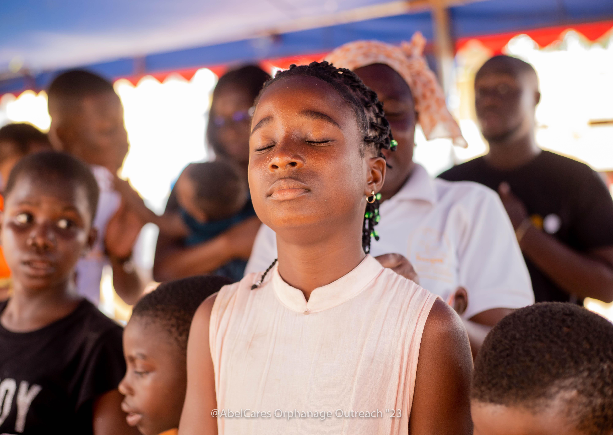
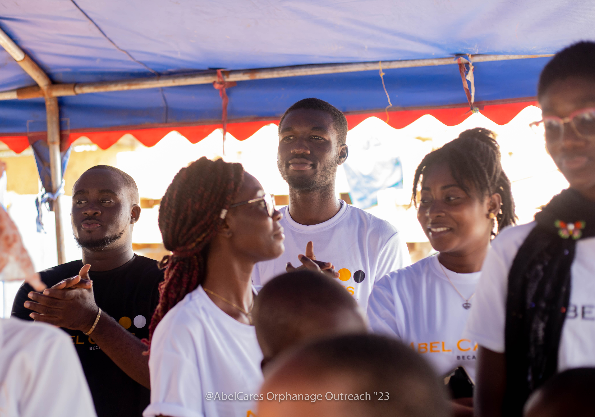
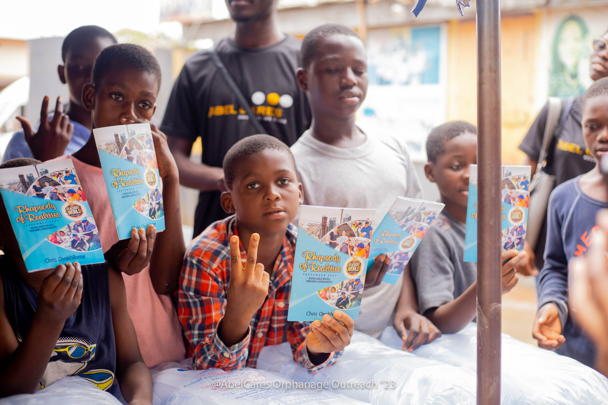
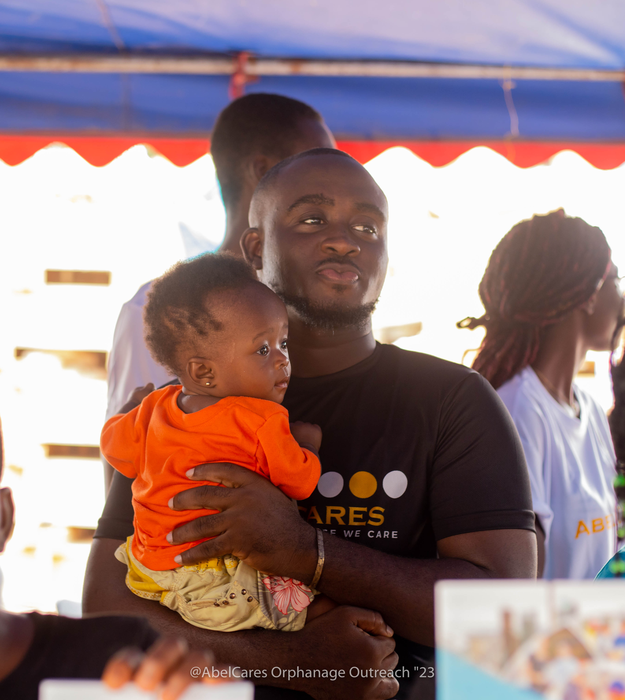
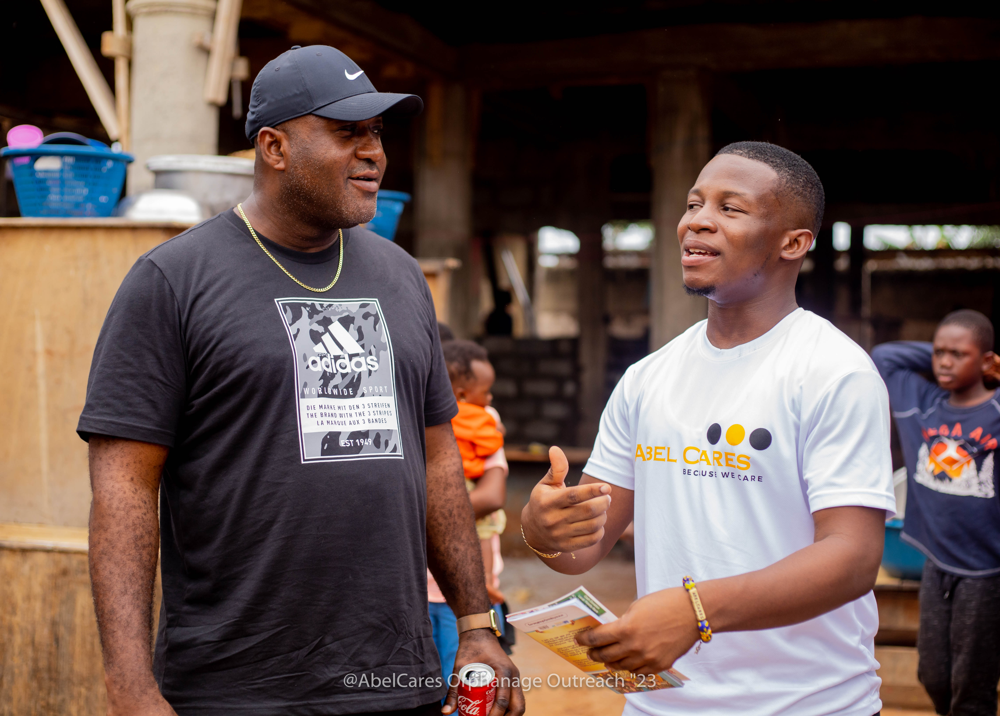

Three divisions. One continent.
Practical, grounded interventions in classrooms, community hubs, and clinic spaces across Ghana and Africa.
Education & Youth
Targeted academic support, entrepreneurial problem-solving, and digital tooling for primary and secondary students.
- Support a Schoolchild Learning materials, exercise books, uniforms, and mentorship for children in rural, underserved communities.
- Entrepreneurial Mindset Program Practical youth workshops focused on micro-enterprise problem-solving, resource management, and team leadership.
- Digital Futures Ghana Applied AI literacy, software tools training, and computer proficiency for young people preparing for the modern workplace.
- Pan-African Leadership Blueprint Summit An annual convening connecting emerging African youth organisers with established civic and industry mentors.
- EmpowerTalks Africa (completed) Foundation school dialogues on civic responsibility and career orientation. Our current secondary school outreach builds on these findings.

Mental Health (PAMHO)
Pan-African Mental Health Organisation (PAMHO)
Our Pan-African flagship dismantling stigma, training first-line community supporters, and hosting clinical and civic dialogues across the continent.
Flagship convening initiatives
- Man-to-Man Mental Health Summit: Addressing depression, male vulnerability, and emotional health among young African men.
- Mental Health Conversations Series: Moderated monthly dialogues held in schools, universities, and workplace venues.
- Pan-African Mental Health Summit: Annual gathering bringing psychologists, public health officers, and community caregivers together.
- AbleKids Initiative Emotional self-regulation skills, art therapy sessions, and specialized psychosocial support for children with diverse learning and physical needs.
- Caregiver & Community Training Structured capacity workshops for youth leaders, teachers, faith coordinators, and community first responders to identify early symptoms of distress.


Climate & Community
Practical sanitation infrastructure, environmental education drives, and direct material aid in underserved districts.
- Reaching the Unreached Distribution of basic relief supplies, water storage, hygiene materials, and family counselling in peri-urban and rural areas.
- Environmental & Sanitation Campaigns Grassroots clean-up exercises, drainage maintenance days, and waste segregation workshops in high-density communities.
- Community Development Projects Clean water borehole advocacy, school sanitation repairs, and support for micro-livelihood groups.

